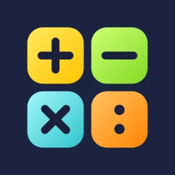

Privacy del sito
Ultimo aggiornamento: 31 ottobre 2026
In breve: questo sito non raccoglie dati personali. Ognuna delle app ha la sua informativa, che trovi in fondo alla pagina.
Che cosa il sito non fa
- non usa cookie;
- non usa statistiche, strumenti di analisi o tracciamento;
- non contiene pubblicità né pulsanti dei social;
- non carica niente da altri siti: i caratteri e le immagini sono sul sito stesso;
- non ha moduli da compilare.
Chi ospita il sito
Il sito è pubblicato con GitHub Pages, un servizio di GitHub. Come succede con ogni sito, GitHub registra alcuni dati tecnici delle visite, come l'indirizzo IP, per motivi di sicurezza. Questi dati restano a GitHub e non arrivano a chi ha fatto il sito.
Per saperne di più (pagine in inglese): che cosa registra GitHub Pages e l'informativa sulla privacy di GitHub.
I link verso altri siti
I pulsanti per scaricare le app portano all'App Store di Apple; dalla pagina di ogni app si arriva anche al suo sito di supporto. Lì valgono le regole sulla privacy di quei siti.
Le app: supporto e privacy
Ogni app ha un sito con le domande frequenti e la sua informativa sulla privacy. Nessuna delle app raccoglie dati personali.
- Leggo e Scrivo Supporto di Leggo e Scrivo Privacy di Leggo e Scrivo
-

Matematica Amica Supporto di Matematica Amica Privacy di Matematica Amica - Geografia Amica Supporto di Geografia Amica Privacy di Geografia Amica
- Solfeggio e Teoria Supporto di Solfeggio e Teoria Privacy di Solfeggio e Teoria
Modifiche a questa pagina
Se in futuro il sito dovesse cambiare il modo in cui tratta i dati, questa pagina verrà aggiornata, con la nuova data.
Contatti
Per qualsiasi domanda: Donato Cipriano — donatocipriano@gmail.com